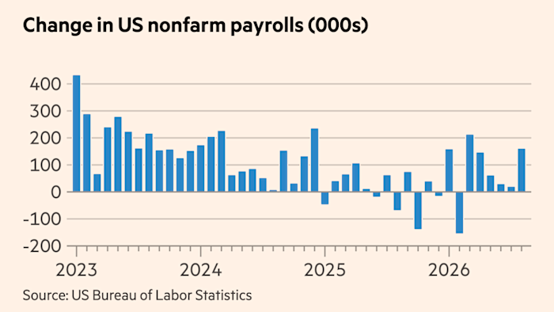

Seoul is weighing whether to send warships to the Strait of Hormuz, the chokepoint through which a fifth of the world's oil moves, turning a Washington pressure campaign into an allied burden-sharing test.

Read the synthesis →
This column has tracked the sanctions threat since Rubio issued it without a deadline. It has one now, in effect: South Korea is weighing naval deployment to the Strait of Hormuz under direct pressure from Washington, according to the South China Morning Post, which would make Seoul one of the first US allies to put military assets behind the campaign rather than just sign a sanctions list. The context by Friday was Washington's parallel push, an operation CNBC is calling America's Economic Outcast campaign, gaining the EU as a co-signatory this week while South Korea's contribution moved from rhetorical to logistical. Reuters reported the same day that the blockade and sanctions are biting inside Iran. That fact is what makes Seoul's choice matter. Washington is not just asking allies to withhold trade, it is asking them to help enforce a chokepoint 6,500 kilometers from Incheon. Nobody has published the number that decides whether this is symbolic or substantive: the size and mandate of any Korean naval contribution. A minesweeper is a gesture. A destroyer group is a commitment. The read this morning is that Seoul will send a token force sized to satisfy Washington without provoking Tehran, because South Korea's own tanker traffic through Hormuz makes it the ally with the most to lose from escalation and the least appetite for it. Vance told reporters this week he would not call the conflict a war; the allied burden-sharing question happening in parallel says Washington is already resourcing it like one. A Seoul-based trade finance officer now has to model a scenario where South Korean banks face secondary sanctions exposure not because they touched Iranian oil, but because their government's naval posture becomes a bargaining chip in talks Tehran has not agreed to have.